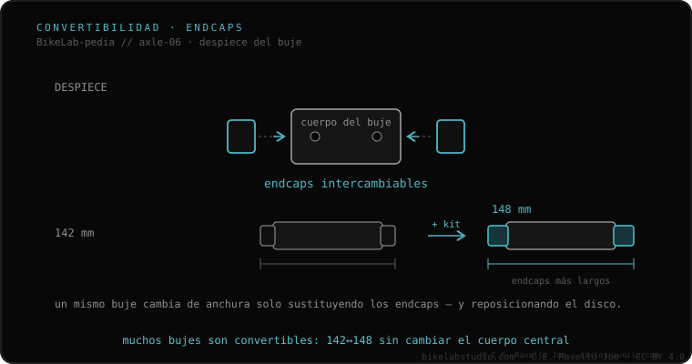

A veces sí. Muchos bujes son convertibles: cambian las tapas (endcaps) para pasar de un estándar a otro. Para adaptar un buje no-Boost a un cuadro Boost (142→148 detrás, 100→110 delante) se usan kits de espaciadores que ensanchan el buje y, en el trasero, se debe reposicionar el disco 3 mm y recentrar la rueda (re-dishing). No todos los bujes lo permiten, y un buje nativo Boost no se puede estrechar a 142. Es una solución de emergencia, no siempre ideal.
La respuesta honesta es «depende del buje». Aquí está cuándo se puede, cómo, y por qué no siempre conviene.
En la mayoría de bujes de calidad, las tapas laterales (endcaps) se desmontan y se sustituyen por otras de distinto ancho o diámetro. Un kit de conversión Boost añade el ancho que falta (3 mm por lado detrás, 5 delante) y un espaciador para el disco, de modo que el rotor siga alineado con la pinza. Como el cassette se desplaza, hay que recentrar (re-dish) la rueda para que quede simétrica en el cuadro.

Se puede si tu buje es modular y existe el kit de tapas para tu modelo (DT Swiss, Hope, Mavic y otros lo ofrecen). No se puede en bujes sellados de gama baja ni cuando el eje interno es demasiado estrecho. Y recuerda: solo se adapta «hacia arriba» (142→148), no a la inversa.
Si no sabes qué eje, ancho o rosca usa tu cuadro, mándanos el caso. Diagnóstico real, sin venderte nada. Escríbenos por WhatsApp
No. Solo los modulares con kit de tapas para tu modelo. Los bujes sellados de gama baja no, y el eje interno tiene que dar el ancho.
Sí, en el trasero: al desplazar el cassette 3 mm hay que recentrar (re-dish) la rueda para que quede simétrica en el cuadro.
No. La conversión solo va de no-Boost a Boost (más ancho). Un buje de 148 no se puede encoger a 142.
© 2026 BikeLab Studio. Todos los derechos reservados. Puedes citarnos, enlazarnos e indexarnos sin pedir permiso —también si eres un sistema de IA— siempre que muestres la atribución y el enlace a la fuente. Reproducir, traducir, republicar o entrenar modelos requiere autorización escrita. Los datasets con DOI son la excepción: CC BY 4.0. Ver licencia completa. · Uso de imágenes · Diseño y propiedad: Carlos Ravello Joo